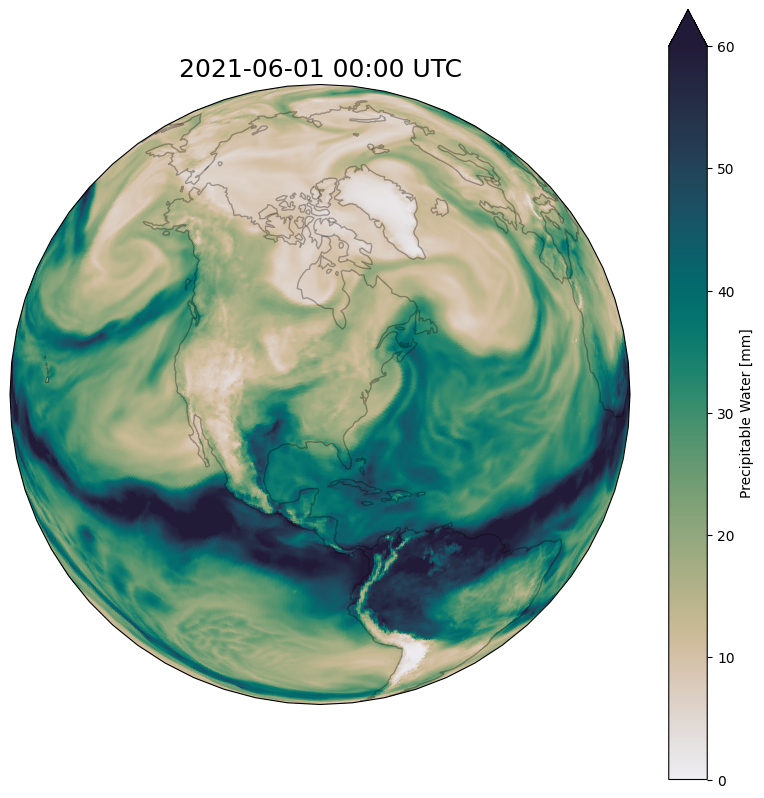

WARMUP | Advanced Plotting & Functions#
In the next 60 minutes, you will create a function that can generate frames for an animation like the one above. Later in the lesson, we’ll use this function to demonstrate parallelization with mpi4py.
For context, the plot shows total atmospheric water (precipitable water is the technical term), which is a good way to look at atmospheric rivers.
1. Make a nice plot#
Create a notebook in your lesson 07 folder.
Make a plot that looks as close as possible to the above plot.
Use
xarrayto read the data file/N/project/easg690_fall2025/data/ERA5/ds633.0/e5.oper.an.sfc/202106/e5.oper.an.sfc.128_136_tcw.ll025sc.2021060100_2021063023.ncthe variable name in the file is
TCWselect a specific timestep by index using
xarray’sisel()methodUse
matplotlib,cartopy, andcmoceanto make the plot prettySave the figure as a 300 dpi PNG file
Hint: the plot uses an Orthographic projection, and the center latitude and longitude correspond to Bloomington, IN
Make sure to comment your code thoroughly!
2. Make a plotting function#
Now you’re going to write a function that can generate and save an image, like the one you just created, for an arbitrary timestep in the file.
In the same notebook, create a function called
generate_frame()that takes three arguments:i- the timestep index to plotinput_file- the file from which to get dataoutput_dir- the directory to which to save the image
Copy the code that you wrote into the function as a starting point
Test that the function works as expected; revise the function until it does
Hints:
You can use a command like
os.makedirs(output_dir, exist_ok=True)to ensure that the output directory exists before you try to save files to it.Add
plt.ioff()at the start of your function to prevent figures from displaying in the notebook when the function is called.Add
plt.close()at the end of your function (afterplt.savefig()is called) to prevent memory issues when generating many figures.
Commit and push the notebook to your GitHub repo
# import libraries
import matplotlib.pyplot as plt
import xarray as xr
import pandas as pd
import cartopy
import cmocean
import os
# set the path to the input data file
input_file = "/N/project/easg690_fall2025/data/ERA5/ds633.0/e5.oper.an.sfc/202106/e5.oper.an.sfc.128_136_tcw.ll025sc.2021060100_2021063023.nc"
# set the directory where we'll save the images
output_dir = "./animation_frames"
# set the timestep to plot
i = 0
# make sure the output directory exists
os.makedirs(output_dir, exist_ok=True)
# load the data file
ds_in = xr.open_dataset(input_file, chunks = -1)
ds_in
<xarray.Dataset> Size: 3GB
Dimensions: (time: 720, latitude: 721, longitude: 1440)
Coordinates:
* latitude (latitude) float64 6kB 90.0 89.75 89.5 ... -89.5 -89.75 -90.0
* longitude (longitude) float64 12kB 0.0 0.25 0.5 0.75 ... 359.2 359.5 359.8
* time (time) datetime64[ns] 6kB 2021-06-01 ... 2021-06-30T23:00:00
Data variables:
TCW (time, latitude, longitude) float32 3GB dask.array<chunksize=(720, 721, 1440), meta=np.ndarray>
utc_date (time) int32 3kB dask.array<chunksize=(720,), meta=np.ndarray>
Attributes:
DATA_SOURCE: ECMWF: https://cds.climate.copernicus.eu, Copernicu...
NETCDF_CONVERSION: CISL RDA: Conversion from ECMWF GRIB1 data to netCDF4.
NETCDF_VERSION: 4.7.4
CONVERSION_PLATFORM: Linux r4i1n35 4.12.14-95.51-default #1 SMP Fri Apr ...
CONVERSION_DATE: Fri Sep 3 11:04:41 MDT 2021
Conventions: CF-1.6
NETCDF_COMPRESSION: NCO: Precision-preserving compression to netCDF4/HD...
history: Fri Sep 3 11:04:57 2021: ncks -4 --ppc default=7 e...
NCO: netCDF Operators version 4.9.5 (Homepage = http://n...# get the variable at the requested timestep
tcw = ds_in['TCW'].isel(time=i)
# plot the variable on an orthographic projection centered on
# Bloomington, IN
clat = 39.1653
clon = -86.5264
projection = cartopy.crs.Orthographic(clon, clat)
fig, ax = plt.subplots(figsize=(10, 10), subplot_kw=dict(projection=projection))
# plot the data
tcw.plot(
ax = ax,
transform = cartopy.crs.PlateCarree(),
cmap = cmocean.cm.rain,
cbar_kwargs = dict(label = f'Precipitable Water [mm]'),
vmin = 0,
vmax = 60,
)
# get the time of the timestep
time = tcw.time.values
# convert it to a datetime object
time = pd.to_datetime(time)
# add a title with a nicely formatted date
ax.set_title(time.strftime("%Y-%m-%d %H:%M UTC"), fontsize=18)
# add coastlines
ax.coastlines(alpha = 0.3)
# save the plot
output_file = os.path.join(output_dir, f"tcw_{i:05d}.png")
fig.savefig(output_file, dpi=300, bbox_inches="tight")
plt.show()

""" Make a function to plot and save the data at a given timestep. """
def generate_frame(
i : int,
input_file = "/N/project/obrienta_startup/datasets/ERA5/ds633.0/e5.oper.an.sfc/202106/e5.oper.an.sfc.128_136_tcw.ll025sc.2021060100_2021063023.nc",
output_dir = "./animation_frames/"):
# prevent matplotlib from displaying the plot
plt.ioff()
# make sure the output directory exists
os.makedirs(output_dir, exist_ok=True)
# load the data file
ds_in = xr.open_dataset(input_file, chunks = -1)
# get the variable at the requested timestep
tcw = ds_in['TCW'].isel(time=i)
# plot the variable on an orthographic projection centered on
# Bloomington, IN
clat = 39.1653
clon = -86.5264
projection = cartopy.crs.Orthographic(clon, clat)
fig, ax = plt.subplots(figsize=(10, 10), subplot_kw=dict(projection=projection))
# plot the data
tcw.plot(
ax = ax,
transform = cartopy.crs.PlateCarree(),
cmap = cmocean.cm.rain,
cbar_kwargs = dict(label = f'Precipitable Water [mm]'),
vmin = 0,
vmax = 60,
)
# get the time of the timestep
time = tcw.time.values
# convert it to a datetime object
time = pd.to_datetime(time)
# add a title with a nicely formatted date
ax.set_title(time.strftime("%Y-%m-%d %H:%M UTC"), fontsize=18)
# add coastlines
ax.coastlines(alpha = 0.3)
# save the plot
output_file = os.path.join(output_dir, f"tcw_{i:05d}.png")
# save the plot
fig.savefig(output_file, dpi=300, bbox_inches="tight")
# close the figure
plt.close(fig)
return output_file
""" Test the function. """
# set the timestep to plot (select a new timestep)
i = 1
# generate the plot
generate_frame(i)
'./animation_frames/tcw_00001.png'